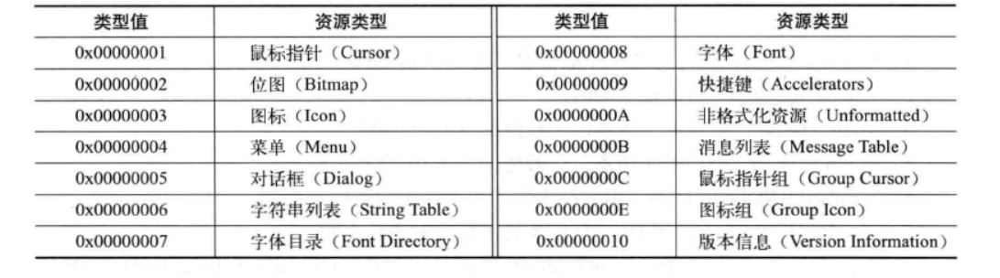
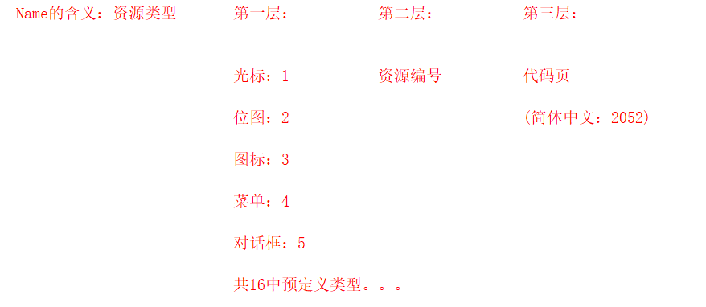
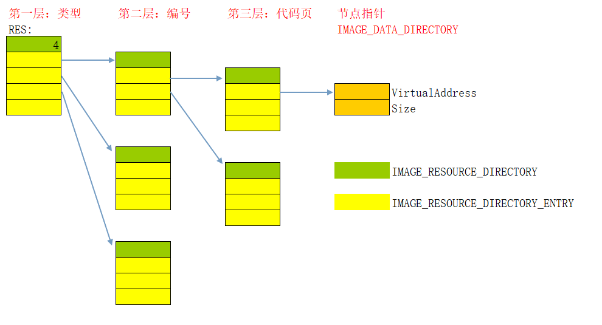

# 图标
# 装入图标
在 WM_CREATE 消息中，程序从资源节区中装入所有的图标和光标资源，装入图标是用 LoadIcon 函数来完成的：
invoke LoadIcon,hInstance,lpIconName | |
.if eax | |
mov hIcon,eax | |
.endif |
HICON hIcon; | |
hIcon = LoadIcon (hAppInstance, MAKEINTRESOURCE (IDI_ICON)); |
MAKEINTRESOURCE 用这个宏的主要原因是有的资源是用序号定义的，而不是字符串。所以要把数字转换成字符串指针。
hInstance 参数指定实例句柄，表示图标资源定义在哪个可执行文件中， lpIconName 参数指定图标资源的名称，它就是资源文件中定义的图标 ID 值，如果调用成功的话，函数返回图标句柄。
除了可以装入资源文件中定义的图标资源之外，当参数 hInstance 为 NULL 的时候，用 LoadIcon 还可以用预定义的 lpIconName 参数装入 Windows 预定义的图标，参数说明如下表所示。
LoadIcon 可以装入的预定义图标
| lpIconName 参数的预定义值 | 图 标 形 状 |
|---|---|
| IDI_APPLICATION | 应用程序默认图标 |
| IDI_ASTERISK | I 符号图标 |
| IDI_EXCLAMATION | 警告图标（黄色三角形＋感叹号） |
| IDI_HAND | 严重警告图标（一般是红色圆形＋叉） |
| IDI_QUESTION | 问号图标 |
| IDI_WINLOGO | Windows 标徽图标 |
# 设置图标
图标一般使用在对话框中或者程序窗口的标题栏中，要在标题栏中设置图标可以用向窗口发送 WM_SETICON 消息的办法实现。
消息的 wParam 参数可以是 ICON_BIG 或 ICON_SMALL ，用来指定图标的分辨率为 32×32 还是 16×16 。
case WM_INITDIALOG : | |
hIcon = LoadIcon (hAppInstance, MAKEINTRESOURCE (IDI_ICON)); | |
// 设置图标 | |
SendMessage(hDlg,WM_SETICON,ICON_BIG,(DWORD)hIcon); | |
SendMessage(hDlg,WM_SETICON,ICON_SMALL,(DWORD)hIcon); | |
return TRUE; |
# 资源表
Windows 下程序中的各种界面 (数据) 组成部分称为资源，比如菜单、图标、快捷键、版本信息以及其他未格式化的二进制资源。
数据目录中的 IMAGE_DIRECTORY_ ENTRY_RESOURCE 项指向此结构。
# 资源结构
资源在 PE 文件中是以目录结构的形式存在的，一般情况下这个目录分为 3 层，从根目录开始分别为资源类型、目录资源 ID 与资源代码页。
这 3 层结构其实是非常简单的，只要我们能清晰地判断出 IMAGE_RESOURCE_DIRECTORY_ENTRY 结构所处的目录深度，以及当前情况下此结构中联合体内的哪个值是有效的，即可理清资源结构。
这 3 层目录结构都是由一个 IMAGE_RESOURCE_DIRECTORY 结构为头部的，并且在其后面跟着一个 IMAGE_RESOURCE_DIRECTORY_ENTRY 结构数组。 IMAGE_RESOURCE_DIRECTORY 结构主要负责指出后面结构数组的成员个数，而后面结构数组的每个成员则分别指向下一层目录结构（或资源数据）。
下面我们就先了解一下 IMAGE_RESOURCE_DIRECTORY 结构。
# IMAGE_RESOURCE_DIRECTORY
typedef struct _IMAGE_RESOURCE_DIRECTORY { | |
DWORD Characteristics; // 资源属性 保留 0 | |
DWORD TimeDateStamp; // 资源创建的时间 | |
WORD MajorVersion; // 资源版本号 未使用 0 | |
WORD MinorVersion; // 资源版本号 未使用 0 | |
WORD NumberOfNamedEntries; // 以名称命名的资源数量 | |
WORD NumberOfIdEntries; // 以 ID 命名的资源数量 | |
// IMAGE_RESOURCE_DIRECTORY_ENTRY DirectoryEntries[]; | |
} IMAGE_RESOURCE_DIRECTORY, *PIMAGE_RESOURCE_DIRECTORY; |
每层目录结构中的起始位置都是一个 IMAGE_ RESOURCE_DIRECTORY 结构，这个结构负责指出紧随其后的 IMAGE RESOURCE_DIRECTORY_ENTRY 结构数组的成员个数。NumberOfNamedEntries + NumberOfIdEntries 就是 IMAGE RESOURCE_DIRECTORY_ENTRY 结构数组的成员个数
下面就来看看 IMAGE_ RESOURCE_DIRECTORY_ENTRY 结构。
# IMAGE_RESOURCE_DIRECTORY_ENTRY
typedef struct _IMAGE_RESOURCE_DIRECTORY_ENTRY { | |
union { // 目录项的名称、或者 ID | |
struct { // 位段 位域 | |
DWORD NameOffset:31; | |
DWORD NameIsString:1; | |
}; | |
DWORD Name; | |
WORD Id; | |
}; | |
union { | |
DWORD OffsetToData; // 目录项指针 | |
struct { | |
DWORD OffsetToDirectory:31; | |
DWORD DataIsDirectory:1; | |
}; | |
}; | |
} IMAGE_RESOURCE_DIRECTORY_ENTRY, *PIMAGE_RESOURCE_DIRECTORY_ENTRY; |
上面的结构说明如下。
- NameOffset：当字段 NamelsString 为 1 时，此字段的值为资源名字符串的偏移。
- NamelsString：资源名是否为字符串，当最高位是 0 时，表示字段的值作为
ID使用。当此值为 1 时，NameOffset会指向一个IMAGE_RESOURCE_DIR_STRING_U结构体，此结构体保存着资源名称，其数据结构如下。
typedef struct _IMAGE_RESOURCE_DIR_STRING_U{ | |
WORD Length; //1) 字符串长度 | |
WCHAR NameString //2) 字符串数组 | |
} IMAGE_RESOURCE_DIR_STRING_U, *PIMAGE_RESOURCE_DIRSTRING_U; |
- Name: 此结构体位于第一层目录中时，此字段保存有资源类型的值。当此结构体位于第三层目录中时，此字段保存有资源语言区域的类型值，资源类型的值如下图所示。

Name 在不同层中的含义：

- Id: 资源的数字 ID。
- OffsetToData: 加上数据目录中资源表的
VirtualAddress就是下一层数据偏移的 RAV。 - OffsetToDirectory: 当字段 DataIsDirectory 为 1 时，此字段的值指向下一层子目录的偏移 (相对资源目录起始地址的偏移)。
- DatalsDirectory: 数据指向目标为子目录。
这个 IMAGE_RESOURCE_ DIRECTORY_ENTRY 是由两个大小为 4 字节的联合体组成的，在不同情况下，两个联合体中的有效字段也不同。
第一个联合体内的字段是根据当前结构体所处的目录层次来决定的，位于第一层目录时字段 Name 有效，保存的信息是资源类型；
位于第二层目录时字段 Id 或结构体有效，这取决于此资源的索引方式，如果采用的是编号索引就是字段 Id 有效，否则结构体有效；
位于第三层目录时字段 Name 有效，保存的信息是资源语言区域类型。
第二个联合体内的字段理论上是根据具体情况而定的，
如果下一级是一个子目录的话，那么就是结构体生效，
如果下一级是资源数据则是字段OffsetToData生效。
在经过三层目录的索引后，最后会到达一个 IMAGE_RESOURCE_DATA_ENTRY 结构中，这个结构将指引我们找到资源数据。下面这个结构体描述的就是此结构。
# IMAGE_RESOURCE_DATA_ENTRY
typedef struct _IMAGE_RESOURCE_DATA_ENTRY { | |
DWORD OffsetToData; // 1) 资源数据的 RAV | |
DWORD Size; // 2) 资源数据的长度 | |
DWORD CodePage; // 3) 代码页 | |
DWORD Reserved; // 4) 保留字段 | |
}IMAGE_RESOURCE_DATA_ENTRY,*PIMAGE_RESOURCE_DATA_ENTRY; |
上面的结构说明如下。
- OffsetToData: 此字段保存着指向资源数据 RAV 的指针。
- Size: 资源数据的体积。
- CodePage: 此资源的代码页信息。
- Reserved: 保留字段，恒为 0x000000000。
# 层次图

每一层的第一个都是 IMAGE_RESOURCE_DIRECTORY 结构，这是为了确认一共有多少项 IMAGE_RESOURCE_DIRECTORY_ENTRY 数据。
而 IMAGE_RESOURCE_DIRECTORY_ENTRY 这个结构在不同的层中有不同的含义。
# 代码实现遍历资源表
// 资源的类型 | |
const char* szResType[0x11] = { 0, "鼠标指针", "位图", "图标", "菜单", | |
"对话框", "字符串列表","字体目录", "字体", | |
"加速键", "非格式化资源", "消息列表", "鼠标指针组", | |
"zz", "图标组","xx", "版本信息" }; | |
void PrintResourceTable(char* pFileBuffer) | |
{ | |
PIMAGE_DOS_HEADER pDosHeader = NULL;//DOS 头 指针 | |
PIMAGE_NT_HEADERS32 pNtHeader = NULL;//NT 头 指针 | |
PIMAGE_FILE_HEADER pFileHeader = NULL;// 文件头 指针 | |
PIMAGE_OPTIONAL_HEADER pOptionHeader = NULL;// 可选头 指针 | |
PIMAGE_DATA_DIRECTORY pDirectory = NULL;// 数据目录 指针 | |
PIMAGE_RESOURCE_DIRECTORY pResourceDirectory = NULL; // 资源目录 | |
PIMAGE_RESOURCE_DIRECTORY_ENTRY pResourceDirEntryArray = NULL; | |
DWORD directoryLevel = NULL; | |
DWORD dwPRD = (DWORD)pResourceDirectory; | |
// 定位资源表的位置 | |
pDosHeader = (PIMAGE_DOS_HEADER)pFileBuffer; | |
pNtHeader = (PIMAGE_NT_HEADERS)(pDosHeader->e_lfanew + pFileBuffer); | |
pFileHeader = (PIMAGE_FILE_HEADER)((DWORD)pNtHeader + 4); | |
pOptionHeader = (PIMAGE_OPTIONAL_HEADER)((DWORD)pFileHeader + (DWORD)IMAGE_SIZEOF_FILE_HEADER); | |
pDirectory = (PIMAGE_DATA_DIRECTORY)pOptionHeader->DataDirectory; | |
// 第一层 | |
pResourceDirectory = (PIMAGE_RESOURCE_DIRECTORY)(RvaToFoa(pDirectory[IMAGE_DIRECTORY_ENTRY_RESOURCE].VirtualAddress, pFileBuffer) + (DWORD)pFileBuffer); | |
// 打印资源表信息 (一级目录) | |
printf("|==================================================\n"); | |
printf("|资源表一级目录信息:\n"); | |
printf("|Characteristics :%08X\n", pResourceDirectory->Characteristics); | |
printf("|TimeDateStamp :%08X\n", pResourceDirectory->TimeDateStamp); | |
printf("|MajorVersion :%04X\n", pResourceDirectory->MajorVersion); | |
printf("|MinorVersion :%04X\n", pResourceDirectory->MinorVersion); | |
printf("|NumberOfNamedEntries :%04X\n", pResourceDirectory->NumberOfNamedEntries); | |
printf("|NumberOfIdEntries :%04X\n", pResourceDirectory->NumberOfIdEntries); | |
printf("|==================================================\n"); | |
//IMAGE_RESOURCE_DIRECTORY_ENTRY 结构的个数 | |
//size_t NumbersOfResource = pResourceDirectory->NumberOfIdEntries + pResourceDirectory->NumberOfNamedEntries; | |
pResourceDirEntryArray = (PIMAGE_RESOURCE_DIRECTORY_ENTRY)((DWORD)pResourceDirectory + sizeof(IMAGE_RESOURCE_DIRECTORY)); | |
// 循环打印后续资源表信息 | |
printf("|----------------------------------------\n"); | |
// 指向一级目录中的资源目录项 (一级目录) 资源类型 | |
for (int i = 0; i < (pResourceDirectory->NumberOfIdEntries + pResourceDirectory->NumberOfNamedEntries); i++) | |
{ | |
// (2) 判断一级目录中的资源目录项中类型是否是字符串 1 = 字符串 (非标准类型)； 0 = 非字符串 (标准类型) | |
if (pResourceDirEntryArray->NameIsString) // 字符串 (非标准类型) | |
{ | |
// 1. 指向名字结构体 | |
PIMAGE_RESOURCE_DIR_STRING_U pStringName = (PIMAGE_RESOURCE_DIR_STRING_U)((DWORD)pResourceDirectory + pResourceDirEntryArray->NameOffset); | |
// 2. 将 Unicode 字符串转换成 ASCII 字符串 | |
CHAR TypeName[20] = { 0 }; | |
for (int j = 0; j < pStringName->Length; j++) | |
{ | |
TypeName[j] = (CHAR)pStringName->NameString[j]; | |
} | |
// 3. 打印字符串 | |
printf("|ResourceType :\"%s\"\n", TypeName); | |
} | |
else // 非字符串 (标准类型) | |
{ | |
if (pResourceDirEntryArray->Id < 0x11) // 只有 1 - 16 有定义 | |
printf("|ResourceType :%s\n", szResType[pResourceDirEntryArray->Id]); | |
else | |
printf("|ResourceType :%04Xh\n", pResourceDirEntryArray->Id); | |
} | |
// (3) 判断一级目录中子节点的类型 1 = 目录； 0 = 数据 (一级目录和二级目录该值都为 1) | |
if (pResourceDirEntryArray->DataIsDirectory) | |
{ | |
// (4) 打印目录偏移 | |
printf("|OffsetToDirectory :%08X\n", pResourceDirEntryArray->OffsetToDirectory); | |
printf("|----------------------------------------\n"); | |
// (5) 指向二级目录 资源编号 | |
PIMAGE_RESOURCE_DIRECTORY ResourceDirectory_Sec = (PIMAGE_RESOURCE_DIRECTORY)((DWORD)pResourceDirectory + pResourceDirEntryArray->OffsetToDirectory); | |
// (6) 打印资源表信息 (二级目录) | |
printf(" |====================================\n"); | |
printf(" |资源表二级目录信息:\n"); | |
printf(" |Characteristics :%08X\n", ResourceDirectory_Sec->Characteristics); | |
printf(" |TimeDateStamp :%08X\n", ResourceDirectory_Sec->TimeDateStamp); | |
printf(" |MajorVersion :%04X\n", ResourceDirectory_Sec->MajorVersion); | |
printf(" |MinorVersion :%04X\n", ResourceDirectory_Sec->MinorVersion); | |
printf(" |NumberOfNamedEntries :%04X\n", ResourceDirectory_Sec->NumberOfNamedEntries); | |
printf(" |NumberOfIdEntries :%04X\n", ResourceDirectory_Sec->NumberOfIdEntries); | |
printf(" |====================================\n"); | |
// (7) 指向二级目录中的资源目录项 | |
PIMAGE_RESOURCE_DIRECTORY_ENTRY pResourceDirEntryArray_Sec = (PIMAGE_RESOURCE_DIRECTORY_ENTRY)((DWORD)ResourceDirectory_Sec + sizeof(IMAGE_RESOURCE_DIRECTORY)); | |
// (8) 循环打印二级目录 | |
for (int j = 0; j < (ResourceDirectory_Sec->NumberOfIdEntries + ResourceDirectory_Sec->NumberOfNamedEntries); j++) | |
{ | |
// (9) 判断二级目录中的资源目录项中编号是否是字符串 | |
if (pResourceDirEntryArray_Sec->NameIsString) // 字符串 (非标准类型) | |
{ | |
// 1. 指向名字结构体 | |
PIMAGE_RESOURCE_DIR_STRING_U pStringName = (PIMAGE_RESOURCE_DIR_STRING_U)((DWORD)pResourceDirectory + pResourceDirEntryArray_Sec->NameOffset); | |
// 2. 将 Unicode 字符串转换成 ASCII 字符串 | |
CHAR TypeName[20] = { 0 }; | |
for (int k = 0; k < pStringName->Length; k++) | |
{ | |
TypeName[k] = (CHAR)pStringName->NameString[k]; | |
} | |
// 3. 打印字符串 | |
printf(" |ResourceNumber :\"%s\"\n", TypeName); | |
} | |
else // 非字符串 (标准类型) | |
{ | |
printf(" |ResourceNumber :%04Xh\n", pResourceDirEntryArray_Sec->Id); | |
} | |
// (10) 判断二级目录中子节点的类型 | |
if (pResourceDirEntryArray_Sec->DataIsDirectory) | |
{ | |
// (11) 打印目录偏移 | |
printf(" |OffsetToDirectory :%08X\n", pResourceDirEntryArray_Sec->OffsetToDirectory); | |
printf(" |------------------------------------\n"); | |
// (12) 指向三级目录 代码页 | |
PIMAGE_RESOURCE_DIRECTORY ResourceDirectory_Thir = (PIMAGE_RESOURCE_DIRECTORY)((DWORD)pResourceDirectory + pResourceDirEntryArray_Sec->OffsetToDirectory); | |
// (13) 打印资源表信息 (三级目录) | |
printf(" |================================\n"); | |
printf(" |资源表三级目录信息:\n"); | |
printf(" |Characteristics :%08X\n", ResourceDirectory_Thir->Characteristics); | |
printf(" |TimeDateStamp :%08X\n", ResourceDirectory_Thir->TimeDateStamp); | |
printf(" |MajorVersion :%04X\n", ResourceDirectory_Thir->MajorVersion); | |
printf(" |MinorVersion :%04X\n", ResourceDirectory_Thir->MinorVersion); | |
printf(" |NumberOfNamedEntries :%04X\n", ResourceDirectory_Thir->NumberOfNamedEntries); | |
printf(" |NumberOfIdEntries :%04X\n", ResourceDirectory_Thir->NumberOfIdEntries); | |
printf(" |================================\n"); | |
// (14) 指向三级目录中的资源目录项 | |
PIMAGE_RESOURCE_DIRECTORY_ENTRY pResourceDirEntryArray_Thir = (PIMAGE_RESOURCE_DIRECTORY_ENTRY)((DWORD)ResourceDirectory_Thir + sizeof(IMAGE_RESOURCE_DIRECTORY)); | |
// (15) 循环打印三级目录项 | |
for (int k = 0; k < (ResourceDirectory_Thir->NumberOfNamedEntries + ResourceDirectory_Thir->NumberOfIdEntries); k++) | |
{ | |
// (16) 判断三级目录中的资源目录项中编号是否是字符串 | |
if (pResourceDirEntryArray_Thir->NameIsString) // 字符串 (非标准类型) | |
{ | |
// 1. 指向名字结构体 | |
PIMAGE_RESOURCE_DIR_STRING_U pStringName = (PIMAGE_RESOURCE_DIR_STRING_U)((DWORD)pResourceDirectory + pResourceDirEntryArray_Thir->NameOffset); | |
// 2. 将 Unicode 字符串转换成 ASCII 字符串 | |
CHAR TypeName[20] = { 0 }; | |
for (int k = 0; k < pStringName->Length; k++) | |
{ | |
TypeName[k] = (CHAR)pStringName->NameString[k]; | |
} | |
// 3. 打印字符串 | |
printf(" |CodePageNumber :\"%s\"\n", TypeName); | |
} | |
else // 非字符串 (标准类型) | |
{ | |
printf(" |CodePageNumber :%04Xh\n", pResourceDirEntryArray_Thir->Id); | |
} | |
// (17) 判断三级目录中子节点的类型 (三级目录子节点都是数据，这里可以省去判断) | |
if (pResourceDirEntryArray_Thir->DataIsDirectory) | |
{ | |
// (18) 打印偏移 | |
printf(" |OffsetToDirectory :%08X\n", pResourceDirEntryArray_Thir->OffsetToDirectory); | |
printf(" |------------------------------------\n"); | |
} | |
else | |
{ | |
// (18) 打印偏移 | |
printf(" |OffsetToData :%08X\n", pResourceDirEntryArray_Thir->OffsetToData); | |
printf(" |------------------------------------\n"); | |
// (19) 指向数据内容 (资源表的 FOA + OffsetToData) | |
PIMAGE_RESOURCE_DATA_ENTRY ResourceDataEntry = (PIMAGE_RESOURCE_DATA_ENTRY)((DWORD)pResourceDirectory + pResourceDirEntryArray_Thir->OffsetToData); | |
// (20) 打印数据信息 | |
printf(" |================================\n"); | |
printf(" |资源表的数据信息\n"); | |
printf(" |OffsetToData(RVA) :%08X\n", ResourceDataEntry->OffsetToData); | |
printf(" |Size :%08X\n", ResourceDataEntry->Size); | |
printf(" |CodePage :%08X\n", ResourceDataEntry->CodePage); | |
printf(" |================================\n"); | |
} | |
pResourceDirEntryArray_Thir++; | |
} | |
} | |
// (21) 目录项后移 | |
pResourceDirEntryArray_Sec++; | |
} | |
} | |
printf("|----------------------------------------\n"); | |
// (22) 目录项后移 | |
pResourceDirEntryArray++; | |
} | |
} |
# 课后练习
参见《Windows PE 权威指南》
1、编写程序，定位某个资源在 PE 文件中的位置.
2、编写程序，提供程序图标资源.
3、编写程序，修改对话框标题.